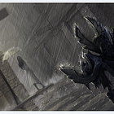

首页
婚礼风格
视频
文化中国
烟雨江南
汉唐中式
明清中式
巴洛克
洛可可
朋克
百老汇
东南亚
哥特
现代韩式
现代日式
美式复古田园
英式皇家
爱丽丝梦游仙境
青春怀旧80后
上传图片采集
添加风格板
安装采集工具
从任何页面采集图片和视频
我的贝壳
账号设置
退出登录

被转采
55862
次
SkyFlame
来自北京
原谅我一生不羁放纵爱自由
帐号设置
1风格板
2采集
0喜欢
3 采集
8 画板